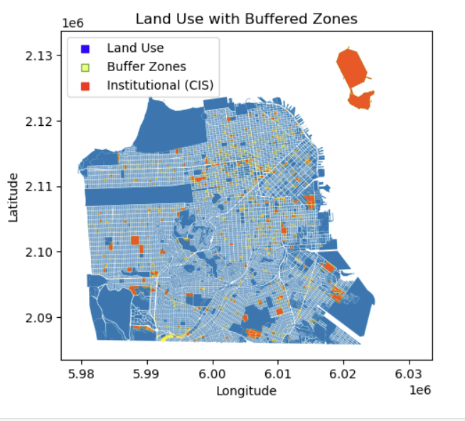
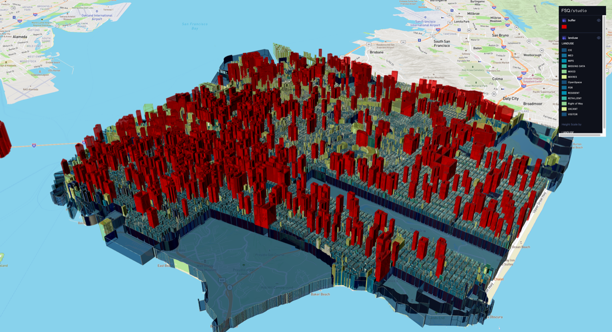

Overview
Inspired by a Spatial Thoughts blog post, this project replicates and extends a buffer analysis of San Francisco's urban layout. Using GeoPandas for data manipulation and Matplotlib for visualisation, the analysis creates buffer zones around institutional land use areas to uncover how cities are structured around key facilities — and how that information can guide better urban planning decisions.
Methodology
Land Use Data
Loaded San Francisco's institutional land use layer and prepared it with GeoPandas, cleaning and projecting the data for accurate distance-based analysis.
Buffer Zone Creation
Created strategic buffer zones around institutional land use areas using GeoPandas, capturing the surrounding urban fabric and accounting for factors like noise and traffic.
Visualisation & Interactive Map
Visualised results with Matplotlib and published an interactive version on Foursquare Studio for exploratory use.

Urban Planning Applications
- Traffic Management — Buffer analysis optimises traffic flow around busy intersections, informing signal timings and road planning
- Transit Accessibility — Planning around transit stops becomes more efficient, promoting public transport usage
- Pedestrian Safety — Buffer zones help identify areas for safer crossings and pedestrian-friendly infrastructure
Tools & Technologies
- GeoPandas — data manipulation and buffer generation
- Matplotlib — spatial visualisation
- Foursquare Studio — interactive map publishing
Outcome
Produced an urban buffer analysis of San Francisco's institutional land use, demonstrating how buffer zones can equip urban planners with insights to enhance city life — from traffic management to pedestrian safety and transit accessibility.